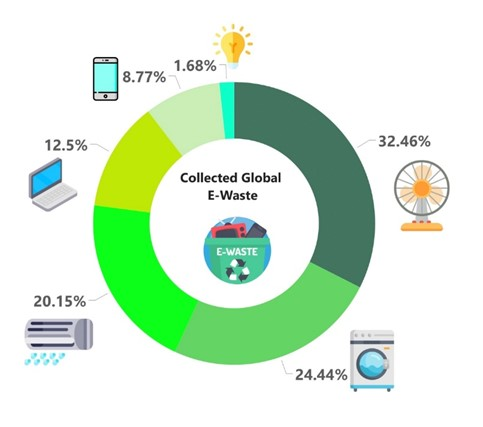
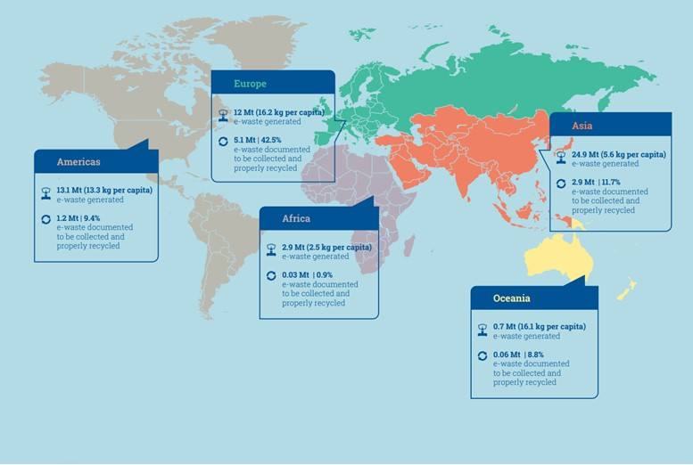
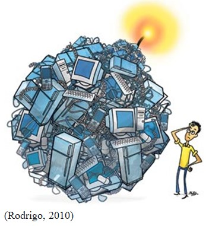

The advent of Electrical and Electronic Equipment (EEE) has enabled human civilization to thrive with countless new inventions in every front, including health, information technology, transportation, and other sectors over the past few decades. The everyday use of these types of equipment span from household needs like kitchen appliances to more personal devices like mobile phones. As with any modern-day product requirement, EEEs eventually meet their end as better alternatives replace them with more advanced features. Also, factors like the end of the usable lifespan, non-functional or technological obsolescence results in the rapid demise of an EEE. This gives birth to a new breed of waste called "electronic and electrical wastes (E-waste)" that adversely impacts human health and the environment.
Hazardous substances and toxic additivesembedded in modern EEEs, such asheavy metals and chemicals such as lead, mercury, chlorofluorocarbons (CFC), and hydrochlorofluorocarbons (HCFC) (Global E-waste Monitor ,2020) eventually get blended in to the natural environment as piles of e-wastes without proper management. CFC and HCFC waste cause ozone depletion and global warming. In the year 2019, 53.6 million metric tons of E-waste (i.e. 7.3 kg per capita) has been discarded around the world Global E-waste monitor (2020). The waste collection can be further classified as it contains 13.1 Mt of large equipment, 17.4Mt of small equipment, 108Mt of Temperature exchange equipment, 6.7Mt of Screen and monitors, 4.7Mt of small IT and telecommunication equipment and 0.9Mt of lamps(Forti, Baldé, Kuehr, & Bel, 2020)(Figure 1).
When considered region-wise, the highest amount of E-waste generated in Asia (24.9Mt) and only 2.9Mt of E-waste are documented and properly recycled. The European region has the highest collecting and recycling rate of 42.5% (5.1Mt) out of total generated e-waste of 12Mt. Africa region has the lowest recycling rate 0.9% (0.03Mt) ) out of total generated e-waste of 2.9Mt. Of the other 82.6% which aren't documented, 7% to 20% are exported to developing countries as second-hand products or as e-waste. According to the estimates, global E-waste will be more than 74 million metric tons by 2030. So the global E-waste increases by 2 million metric tons per year(Forti, Baldé, Kuehr, & Bel, 2020)(Figure 2 and 3).
According to that report, countries that have adopted a national e-waste policy and regulations have increased by 44% since 2014, but that includes only 78 countries out of 193 countries, including popular countries like India and China. Having only laws and regulations is not enough to implement them practically. In order to execute e-waste recycling programs successfully, people's awareness about the factors such as the adverse impact of e-waste, proper disposal methods available in their areas, and how they can contribute to protecting human health and the environment by disposing of e-waste properly are essential.
Most people in a country like Sri Lanka do not have proper knowledge regarding the e-waste and they have no clear idea what happens if they dump them into the environment recklessly. Also, most people are not familiar with the term e-waste, and they do not know how to divide normal trash and e-waste. Due to the lower level of awareness regarding the e-waste, they do not pay any attention to clearly manage the e-waste. They mostly prefer to resell their electronic equipment after ending their useful lifetime. Not only that some people burn e-waste without knowing what harm can be done by burning them.
Challenges of the E-waste
|  | Most developing countries discarded their e-waste as landfill which can be harmful for the environment as well as the human body. Before landfilling, some e-waste burned in the opening yard. That will cause air pollution, because when burning most harmful toxic air will be released into the atmosphere. Also, those hazardous substances of e-waste add to the water resources as well. Together those things led to a huge environmental pollution which can harm the animals and the human. This problem is very massive in developing countries, compared to developed countries. Importing second-hand equipment from developed countries also led to the increase of the e-waste in developing countries. Most of the time those are imported illegally, without doing proper checking. Basal convention causes a huge problem to the people who are in the developing countries. Another problem is Ignorance of the toxicity of the hazardous nature of e-waste. There is a lack of awareness-raising in government circles about the potential dangers of e-waste. Also, public people are not fully educated regarding the dangerous impact of e-waste. Lack of investment is a common problem in developing countries. Also, this can have an impact on the e-waste management systems. Because some e-scrap recycling program can be costly, which cannot afford by those poor countries. Due to that they have failed to implement a strategy to recycle e-waste properly. Not having proper legislation is another important problem arising under the e-waste management. If those rules exist, the government can control improper disposal of e-waste and prohibit the illegal importance of e-waste as well as second-hand equipment. |
Also, the attitude of the public towards e-waste in developing countries is also challenging. Because most people prefer to get some money by selling their e-waste while other developed country's public pay money to discard their e-waste. So, this attitude should be changed in order to launch a proper e-waste management mechanism.
Also, there are no proper guidelines for the unorganized sector to handle E-waste. No incentives are mentioned to lure people engaged to adopt a formal path for handling E-waste. Working conditions in the informal recycling sector are worse than in the formal sectors. There are no proper motivations for the workers who are doing work to recycle e-waste. Because working with electronic waste is not good for human health. Due to that most employees are not willingly coming for that job, that's why it needs some motivation and to ensure the safety of employees as well.
Not only the government, but also manufacturers should be responsible for their electronic equipment after sale. So, there are no proper rules and regulations for the manufacturers regarding the e-scrap. Also, there is no proper database for the electronic equipment, which shows the lifetime of the e-waste, customer information and can show which customer is going to discard their electronic equipment next.
How to overcome the e-waste challenge
As e-waste is a challenge for the present world, we need solutions to overcome those challenges. Sometimes e-waste can bring economic benefits and sometimes it can lead to losses. However, we should be able to overcome the e-waste challenge due to it contains hazardous and non-hazardous substances. Therefore, to overcome the e-waste challenge, the below solutions can be implemented.
Value of e-waste
When it comes to the value of e-waste, we can consider e-waste as a resource that makes a value from many perspectives. Mainly from the economic perspective, e-waste is a source of money. It means e-waste contains some valuable substances. Such as gold, cadmium, silver, lead etc. So, by using these valuable substances, money can be earned. This is called e-waste mining. According to that, those valuable substances can be mined and using that we can make valuable products. On the other hand, we can focus on recycling. Nowadays most of the countries also pay attention on recycling plants because there is a vast e-waste recycling market in the world. Therefore, it assists in many ways for the economy of a country due to recycling is becoming one of the largest and most valuable industries in the world. To reduce unemployment, to earn foreign currency by importing products, to increase per capita income etc. In Sri Lanka also, there are recycling plants. But if we can take actions to expand recycling plants and make improvements for the existing recycling plants, we can achieve a great development as a country.